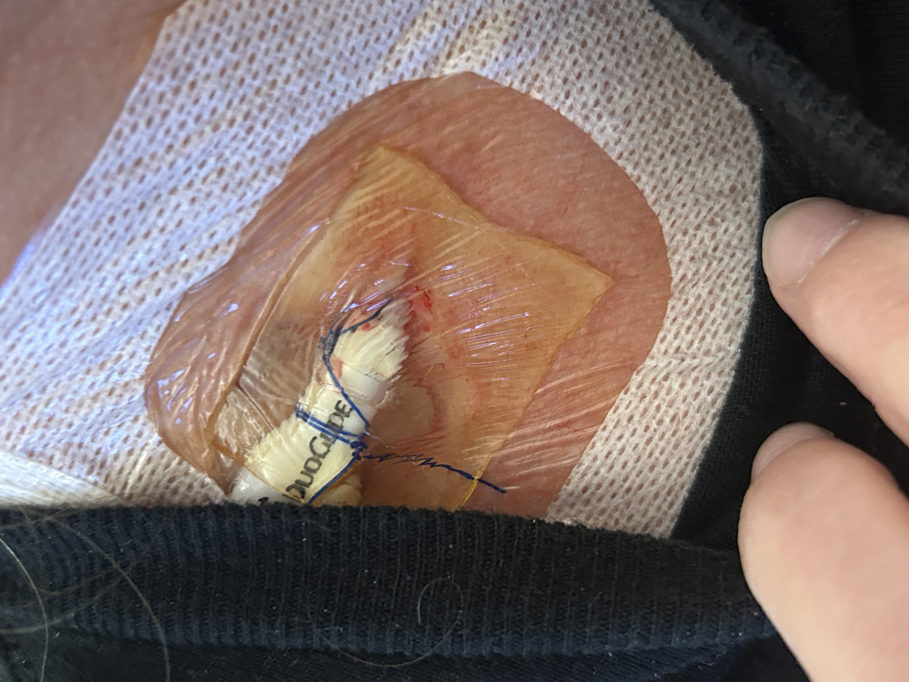
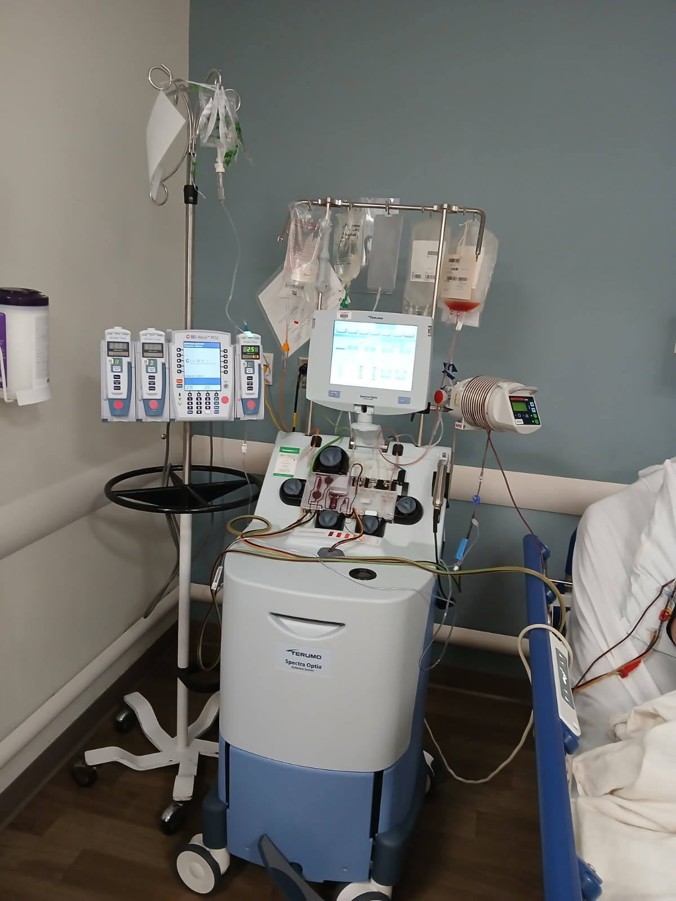
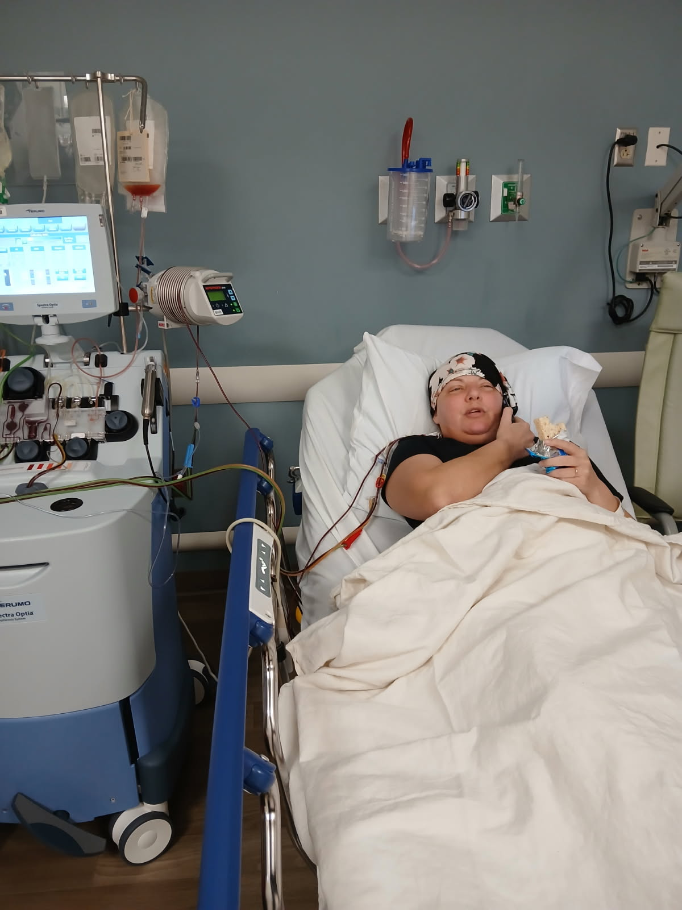
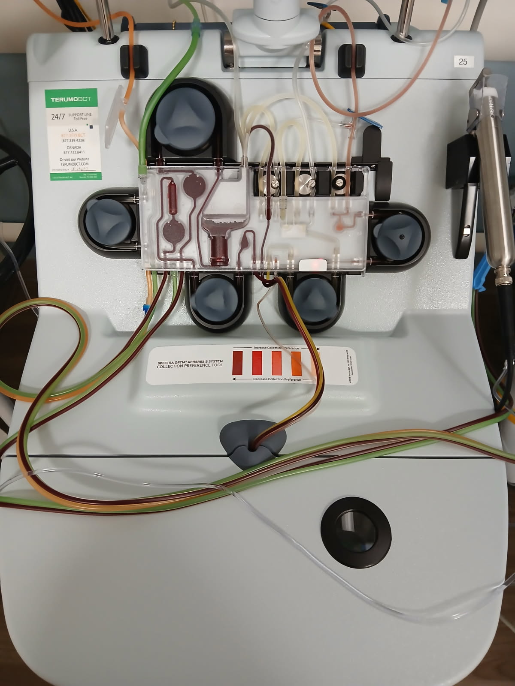

Our Journey
Karla’s CAR-T Journey
This section documents our family’s real-world experience with CAR-T therapy, including timelines, symptoms, emotional moments, recovery milestones, and lessons learned throughout treatment.
Our Journey
This section documents our family’s real-world experience with CAR-T therapy, including timelines, symptoms, emotional moments, recovery milestones, and lessons learned throughout treatment.
The Road Through CAR-T
This timeline will grow as we confirm dates, medication times, symptoms, and recovery milestones.
Consultations, testing, scans, planning, and preparing for treatment.
The apheresis process involved collecting Karla’s T cells so they could later be modified for CAR-T therapy. To do this, she required a temporary catheter placed into the jugular vein in her neck.
Looking back, we understand why the procedure is necessary and how common it is during CAR-T preparation, but emotionally it was one of the biggest surprises for our family. Hearing that a catheter would need to be placed in her neck suddenly made the seriousness of the process feel very real.
We are sharing this not to scare anyone away from CAR-T therapy, but because we believe families deserve to feel emotionally prepared for every stage of the journey. CAR-T remains one of the most advanced and promising cancer treatments available, and many patients benefit tremendously from it. We simply believe that knowing what to expect can make the experience less overwhelming when those moments arrive.
These photos show part of Karla’s apheresis experience, including the temporary catheter, hospital room, treatment setup, and collection machine used during the T-cell collection process.




The time between cell collection and infusion while the cells are prepared.
The chemotherapy given before CAR-T infusion to prepare the body.
The day the modified CAR-T cells are infused back into the patient.
Fevers, inflammation, monitoring, and the early immune response after infusion.
Confusion, blank stares, ICE score checks, delayed responses, and neurological recovery.
Neurological improvement, physical weakness, mobility, discharge planning, and hope.
ICANS Timeline
These notes are based on our family’s experience and will be updated as we confirm exact times and details with the care team.
On the night of May 24, Karla began having trouble with her writing tests. Later that night, the nurses told us she was entering the ICANS stage.
By the time we arrived the morning of May 25, she was in full-blown neurotoxicity. Our nurse Patrick called ahead to prepare us so we would not be completely blindsided when we walked into the room.
Even with the warning, seeing her was shocking. I had video documentation from the moment I opened the door, and I started crying almost immediately because I could tell she just wasn’t there.
Karla was given emapalumab at approximately 4:30 PM on May 25. This was the medication we understood was being used to help calm the inflammatory process involved in her severe neurotoxicity.
Exactly 48 hours after receiving emapalumab, Karla was about 95% recovered neurologically from what we could observe. This was one of the most dramatic and hopeful changes we witnessed during the process.